Summary
The primary challenge for this project was to help M Powered Strategies (MPS) redefine their branding to fit their new strategic objectives and better represent their staff. The company's current branding lacked focus and alignment because they retained pieces of the former owner’s branding and mixed in newer elements over time.
I was lead on the company's redesign project which included: a full website rebuild, extensive revision of content/messaging and an update of brand documentation and collateral.
CLIENT/ROLE
Client: MPS
Role: UX/Visual designer, project manager, content manager
SCOPE
brand and website redesign, content refresh, brand implementation, training
TOOLS
Photoshop, InDesign, Illustrator, WordPress, InVision, Microsoft Office Suite
Problems
MPS' existing brand and website were problematic for the following reasons:
- Existing content on site was too dense and full of jargon
- Brand was generic and did not differentiate the company
- Brand did not highlight or reflect the personality of the company's staff
Solutions
These solutions were incorporated to help address the issues noted above:
- Streamline messaging so it was up-to-date, short and accessible by a wide audience
- Create case studies organized by client-type so potential business partners can easily see and understand MPS' service offerings
- Add interface features that would make the site easier to navigate and to connect with MPS staff for potential business opportunities or hiring needs
- Update brand and website interface to a cleaner, sleeker and more vibrant feel
PROCESS
Use the links below to skip to different sections:
Brand Positioning & Messaging
1.1 Messaging Problems
MPS' existing messaging was problematic on three counts:
- Too much content on each page and wide use of jargon made it difficult for users to understand service offerings
- Content was targeted towards a very specific audience (government) and did not translate to the new sectors the company was looking to expand into
- Current messaging did not highlight the company's biggest asset- its staff
1.2 Client Interviews
Before new messaging could be crafted, MPS' identity needed to be redefined. We needed to understand more about what differentiated MPS today and what kept their clients coming back year after year. To accomplish this, a series of interviews with MPS' clients and current/former staff were conducted and the results were compiled into a document that extracted the trends and key words.
From the interviews, it was clear that people thought that MPS was a collaborative, engaged, and empowering company with high performing staff. These concepts formed the backbone of the new messaging strategy.
Read the Interview Results
1.3 Brand Identity Document
After the interviews were completed, I worked with an external vendor to compile an identity document based off the interview results.
Brand Identity: MPS Brand Wheel
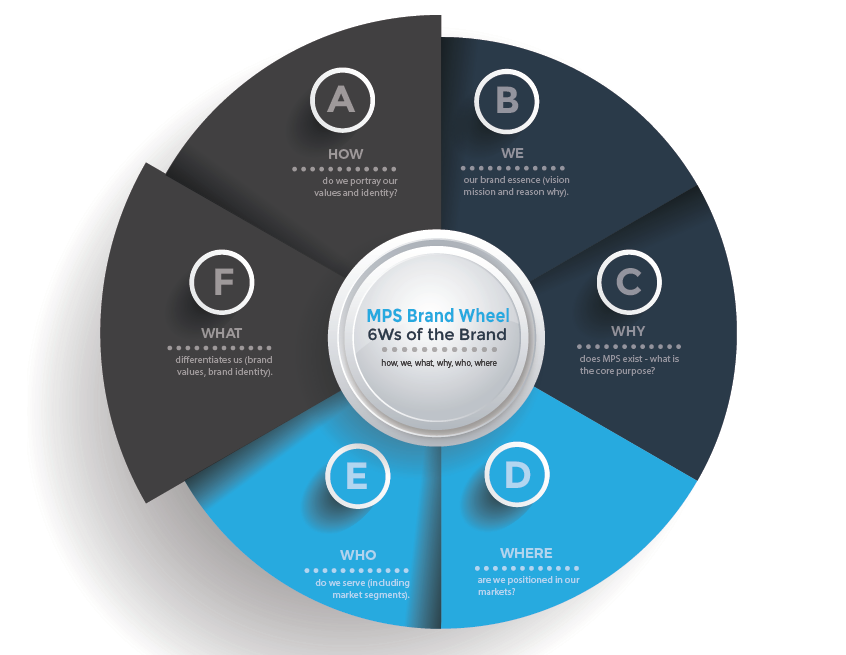Excerpt from Brand Identity Document
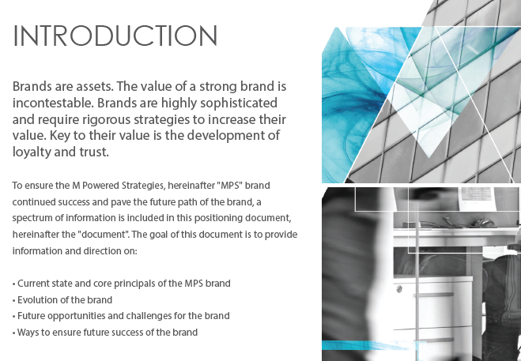View Brand Identity Document
Information Architecture
2.1 Content Strategy
Our primary objectives were to cut down on the overall length of the copy on the website, as well as eliminate the use of sterile, academic language. Instead, we wanted the messaging to center around a compelling narrative of the company’s internal motivations, past work and thought leadership.
Review the Content Strategy Documents
2.2 Case Studies
Case studies were developed in order to make it easier for any customer to understand MPS' service offerings and and how to contact the appropriate parties for more information. These case studies highlighted different customer types (i.e. from different industries) as well as different service lines. Once the content was finalized it was optimized for SEO to help MPS reach new clientele.
Example of Case Study on Site
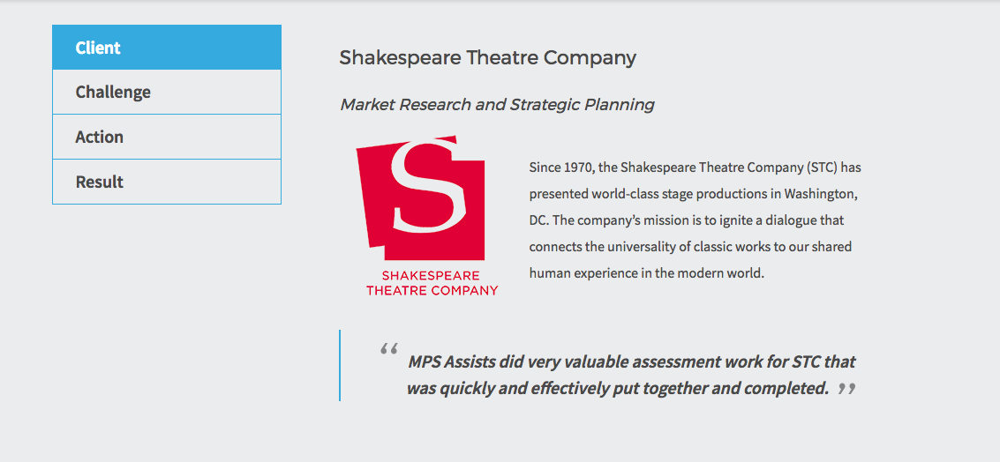Detail: Case Study Word Template
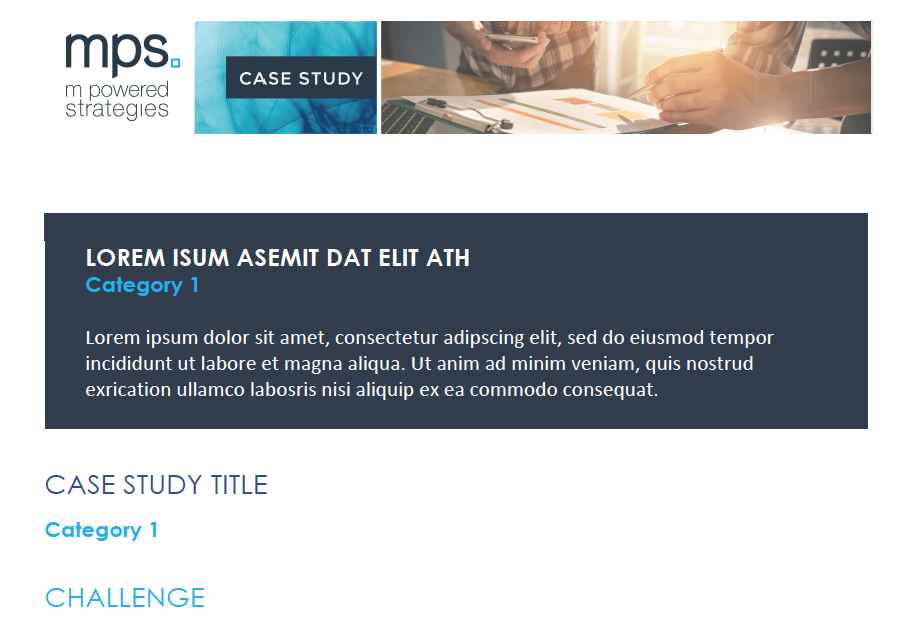Visual Identity
3.1 Existing Brand Issues
The main issue with the existing branding was that it was largely inherited from the previous owner and therefore lacked strategic focus and alignment with the current state of the company. The branding came off as generic and outdated, failing to capture the vibrancy of the young staff and the service-oriented heartbeat of the firm.
3.2 Brand Colors and Imagery
To address these issues, we updated the corporate colors to a vibrant, complementary blue and orange scheme and incorporated imagery that better reflected the collaborative, hands-on nature of the staff and the urban environment of D.C.
Updated MPS Brand Colors
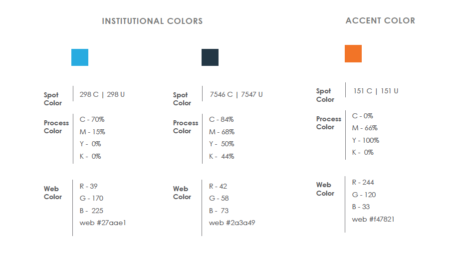Collaborative imagery using blue and orange filter
Fractal imagery to reflect process-oriented quality of MPS staff
Modern, sleek imagery of D.C. landscape
3.3 Logo
Over the years, M Powered Strategies became known colloquially as “MPS” and the firm wanted a logo that incorporated their nickname since it was so prevalent among their clients. More specifically, MPS wanted a logo that allowed them to use “MPS” as an icon by itself or together with their full name as needed.
The client also requested a stacked logo that would be easier to use on print collateral and in digital mediums without taking too much horizontal space. I worked together with an external vendor to iterate on designs and finally landed on the logo design below.
Former MPS Logo
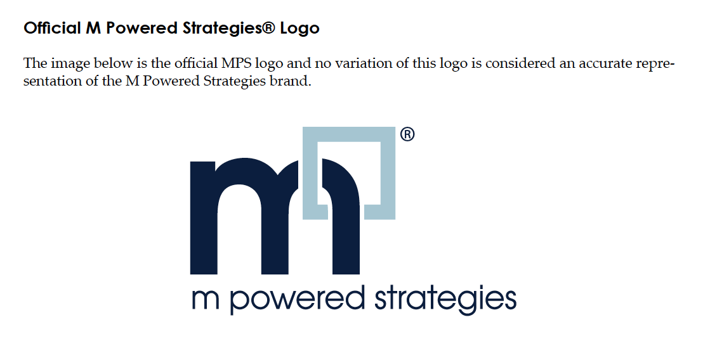 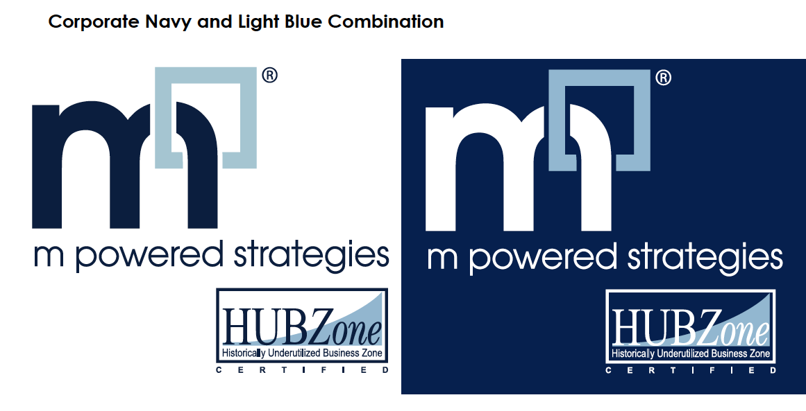New MPS logo
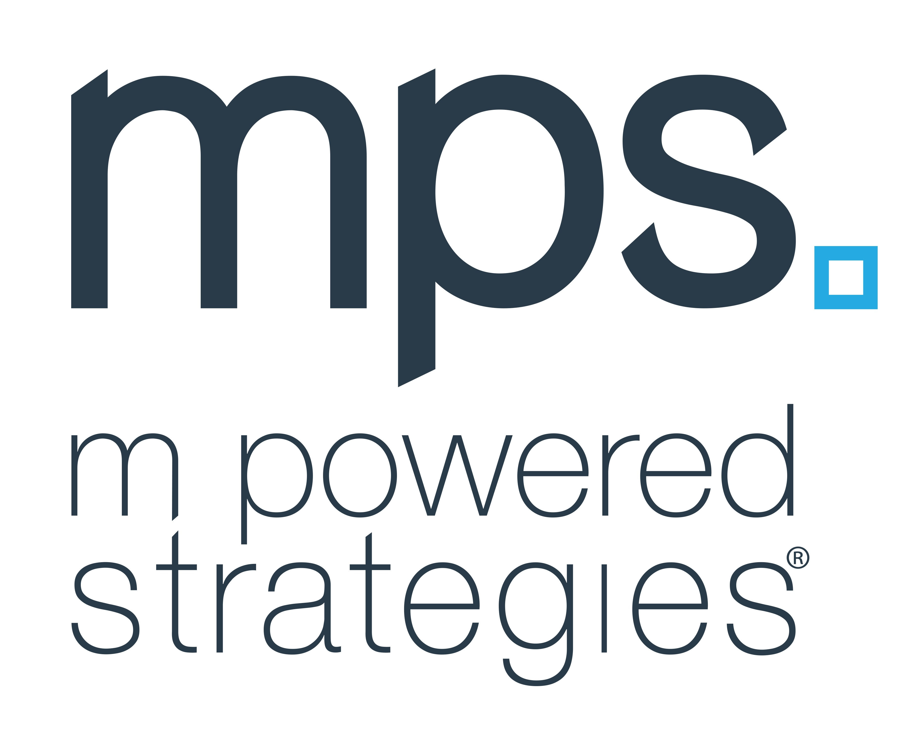 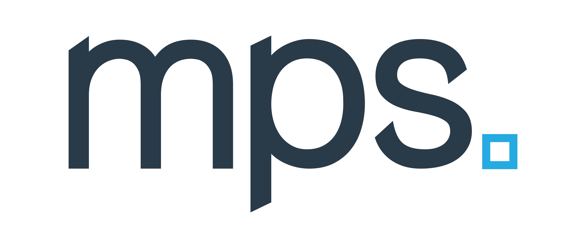Website
Old Website
Here are some shots of the old MPS website. As you can see, it is cluttered with content with an outdated and strictly "informational" feel. Another big issue with the old site was that is was not built to be responsive; making the site fully responsive was a major focus during the redesign.
Old MPS Website
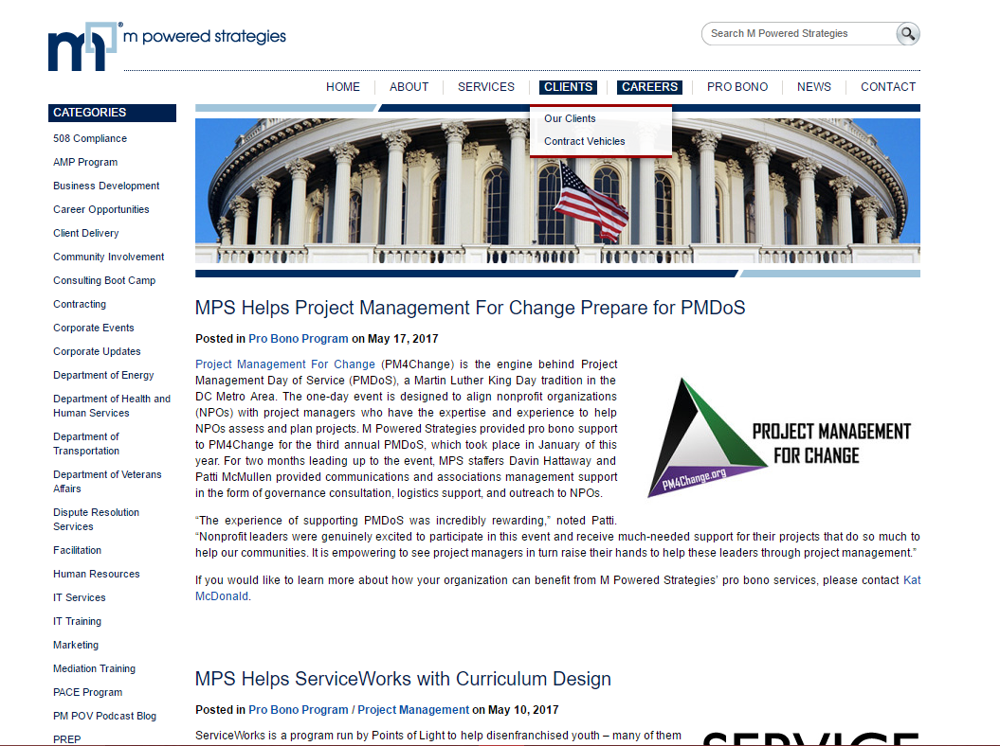 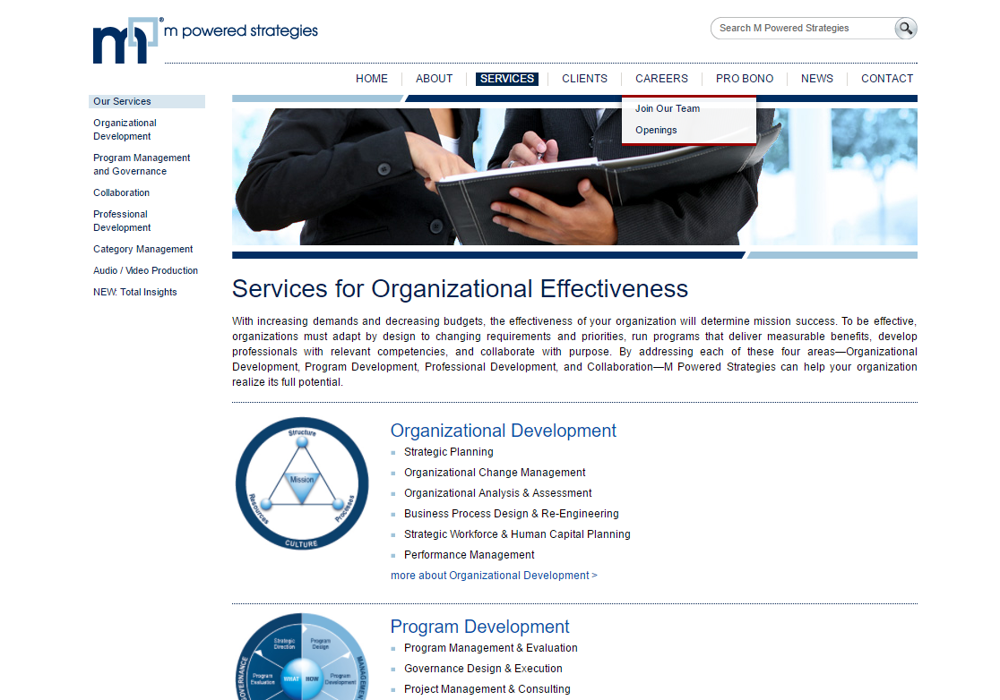New MPS Website: Desktop
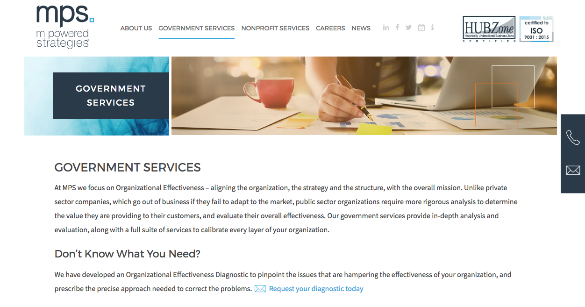 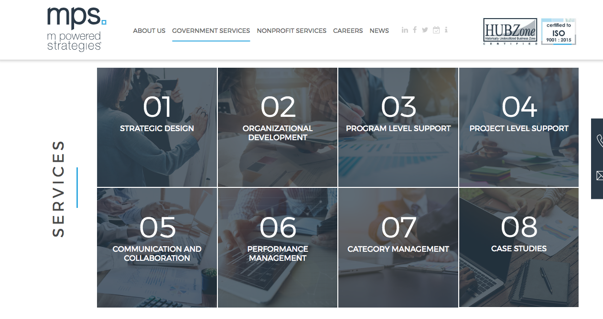New MPS Website: Mobile
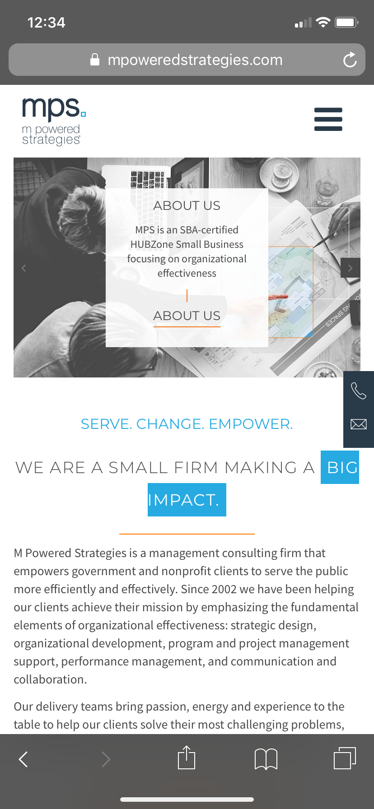 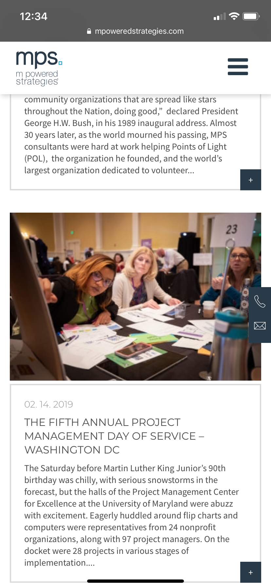Brand Implementation
Once the new brand was finalized and the website was updated, all of the existing print and digital collateral needed to be updated. These included PowerPoint templates, marketing materials, banners, proposal templates, internal process documents, graphics, etc.
This was a challenging (but fun!) portion of the redesign because, while there were some existing guidelines, many elements still needed to be defined and standardized. As documents were updated, I worked on expanding the brand guidelines and developed detailed templates with instructions and examples to help guide staff in the transition.
Additionally, to help preserve the brand's integrity moving forward and ensure that the redesign was successful from an organizational perspective, I worked with the communications team to develop presentations that provided an overview of the new brand and presented them to the staff. I also designed and conducted brand-related trainings for employees so they could confidently use the new templates in their daily work.
MPS 1-page Promotional Collateral
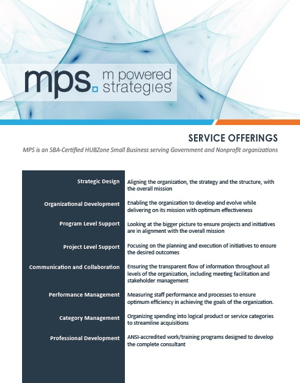MPS Event Banner
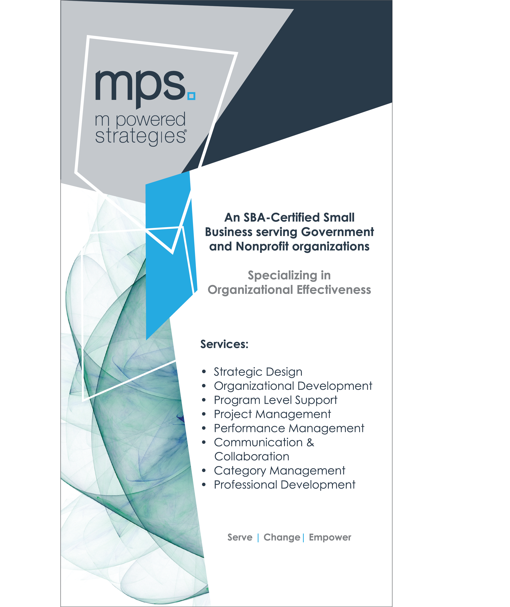MPS Slide Deck Cover
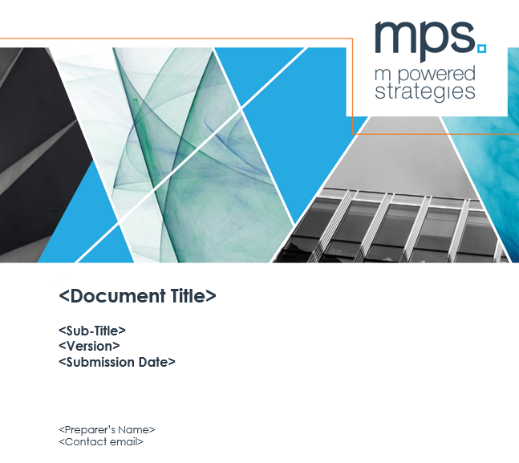Conclusion
The MPS redesign was a challenging but rewarding project. It involved collaborating with, and reporting to, many different stakeholder groups (CEO, internal managers, employees, external vendors, etc.) who had varying needs and competing ideas.
At the beginning of the project, we were all under the impression that it would primarily be a visual redesign with some minor changes and additions to the messaging. As the process evolved, we realized that there were some deep, existential questions that were unresolved regarding the company's identity and future strategic goals. We quickly realized that without those questions answered, we would be building on top of quicksand. Unfortunately, addressing these issues mid-process meant backtracking and delaying the project end date, however, everyone agreed it was necessary for a successful outcome.
My biggest lessons learned from this project are the following:
- Solidify who the approval authority is from the beginning AND make sure that other stakeholders understand/agree with that
- When asking for feedback from multiple stakeholders, use a tool or platform that allows everyone to see other people's comments so there is no duplication of efforts or mixed messages
- If someone can't explain something concisely, it isn't fully understood yet
- There is no such thing as a "simple" redesign project